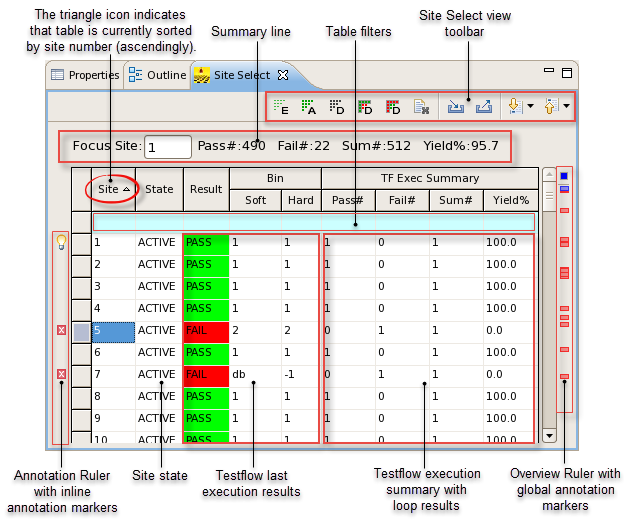
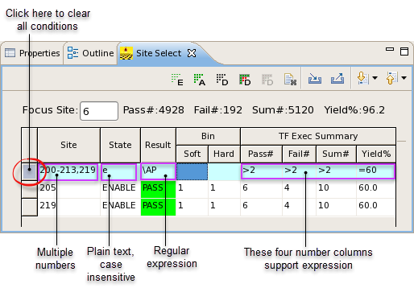
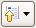
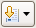

Site Select view
The Site Select view is included by default in major SmarTest perspectives (Setup perspective, Debug perspective, C/C++ perspective, Hardware Perspective).
This view provides similar site setup functions as the Site Control Window does but with enhanced features especially for easier management of massive sites. The Site Control Window only supports single site state selection, which leads to many clicks in case of massive multisite. The Site Select view allows you to batch select sites' state for test execution and reselect sites' state based on test execution results. Unlike the Integrated Result Tool, which loads test results from data log, the Site Select view directly reads the execution results and displays them in the table after the test execution completes.

Tasks
Using the Site Select view you can execute the following tasks:
Changing site state
There are multiple ways to change site state in the Site Select view.
Batch site state select: Use the buttons on the view toolbar to batch select a particular state for the target sites.
- Click the Enable All Visible Sites, Activate All Visible Sites or Disable All Visible Sites button to set state to enabled, active or disabled for all visible sites.
- After test execution completes, click the Disable All Pass Sites button to set state to disabled for all passed sites, or click the Disable All Fail Sites button to set state to disabled for all failed sites.
Single site state select: Use the shortcut menu to change state for a selected site.
- Right-click the State field in the row of the target site. The shortcut menu is displayed.
- From the shortcut menu, select ENABLE, DISABLE or ACTIVE to set state to enabled, disabled or active for the selected site.
Multiple sites state select: Use the shortcut menu to change state for multiple selected sites.
- Click the small field at the very left of each row to select a starting row.
- To select consecutive rows: Press the Shift key and click the small field at the very left of any other row to select an ending row. This selects the starting row, the ending row and all rows between them.
- To select nonconsecutive rows: Press the Ctrl key and click the small field at the very left of any other row to select an additional row. This adds another row to the multiple rows selection. Repeat to select more rows.
- Right-click the selected rows. The shortcut menu is displayed.
- From the shortcut menu, select ENABLE, DISABLE or ACTIVE to set state to enabled, disabled or active for the selected sites.
Set in focus site: Manually change in focus site. Only one site can be set in focus.
- In the summary line above the table, enter a valid site number in the Focus Site: text box to put query focus on this site. Or
- Right-click the State field in the row of the target site. On the shortcut menu displayed, click FOCUS to put query focus on this site.
Navigating site results
View the summary line above the table to get overall summary with all sites pass/fail statistics.
View the test results entries in the Site Select table to see last execution results and loop execution summary of each site.
Quickly jump between failed sites by using:
- The Previous Annotation and Next Annotation buttons on the Site Select view toolbar.
- The annotation ruler on the left margin of the Site Select view.
- The overview ruler on the right margin of the Site Select view.
Sorting site results
Use table sorting to display rows with the same entries together in a particular column, and list all rows alphabetically (for text columns) or numerically (for number columns) based on their entries' values in either ascending order (indicated by an upward-pointing triangle) or descending order (indicated by an upside-down triangle).
- Clicking a column title sort the table by this column in ascending order (rows with smaller
values come first). This is indicated by a triangle
 .
. - Clicking again sorts the table by the column in descending order, which is indicated by an
upside-down triangle
 .
. - Clicking again clears table sorting and restores the default display (sorted by site number in ascending order).
Filtering site results
Use the table filter (the topmost row with a cyan background in the Site Select table) to restrict rows that are displayed in the table to those matching conditions your specify.
Double-clicking a cell of the table filter lets you enter the desired condition for that column. (See below for the syntax.) It also displays a drop-down list at the right side of the cell from which you can choose recently entered conditions.
If conditions are entered in multiple columns, only records matching all of them are displayed.
Clicking the small field at the very left of the table filter row removes all conditions; the table once again displays all rows.
Syntax
In the fields of the table filter, you can enter the following types of conditions. Below the table, also find the figure for illustration.
Condition Type |
Applied to |
Expected Result and Remarks |
Example |
|---|---|---|---|
Plain text |
text columns |
Only those rows are displayed where the content in the filtered column starts with the text you have entered (for the State column), or contains the text you have entered (for the Result column). Note: The Result column is case sensitive while the State column is not. |
Entering 'E' in the filter field in the State column finds all sites in 'ENABLE' state. Entering 'A' in the filter field in the Result column finds 'PASS', 'FAIL' and 'N/A' results. |
Regular expression |
text columns |
Only those rows are displayed where the content in the filtered column matches the regular expression. Note: You can use Content Assist (Ctrl+Space) to insert common regular expression terms. |
Entering '/AF' in finds all columns starting with the capitalized letter 'A'. |
Number |
number columns |
Only those rows are displayed where the content in the filtered column is exactly the number you entered. |
Enter '219' in the Site column finds site 219. |
Range (two numbers separated by an - en dash) |
number columns |
Only those rows are displayed where the content in the filtered column is greater than the first number you entered and less than the second number. Note: You must specify both the starting number and the ending number. If you leave out one of the numbers, no result is returned. |
Entering '200-213' in the filter field in the Site column finds site 200 to site 213.
|
Multiple numbers (separated by commas) |
number columns |
Only those rows are displayed where the content in the filtered column is exactly any of the numbers you entered. (This is an "or" query.) Note: Only use comma to separate numbers and number ranges. Never add spaces before or after a comma. |
Entering '200-213,215,219' in the filter field in the Site column finds site 200 to 213, as well as site 215 and 219. |
Expression (with >, <, = operators) |
number columns |
Only those rows are displayed where the content in the filtered column is larger than or less than or equal to the number following the operator you specified. Note: Only supported in the last four columns from the left. |
Entering '=60' in the Yield% column finds all sites with a yield percentage equaling to 60.0%. |

Exporting and importing site control settings
Export site control data when debug is interrupted. Import them back later and continue working with the task from where you stopped.
To export site control settings:
- Click the Export Site Control Setting button on the view toolbar.
- On the Export Site Control Data to CSV window, specify a location and file name for the CSV file to save.
- Click Finish.
To import site control settings:
- Click the Import Site Control Setting button on the view toolbar.
- On the Import Site Control Data from CSV window, browse to locate a previously saved CSV file with exported site control settings.
- Click Finish.
Reference
Summary line
Field Name |
Description |
|---|---|
Focus Site: |
Site number of the site in query focus. |
Pass#: |
Pass number. Total counts of pass results from all testflow execution loops on all sites. |
Fail#: |
Fail number. Total counts of fail results from all testflow execution loops on all sites. |
Sum#: |
Pass# + Fail#. Total counts of all test results (both pass and fail) from all testflow execution loops on all sites. |
Yield%: |
Pass# / Sum#. Percentage of pass results for all sites. |
Table
|
Column Title |
Description |
|---|---|---|
|
Site |
Site number. |
|
State |
The currently selected state of a site, which can be changed either using the shortcut menu or using buttons on the Site Select view toolbar. |
Site's pass or fail results from the last testflow execution
|
Result |
Test result of the current site in the last testflow execution.
|
Soft |
The number of the software bin. |
|
Hard |
The number of the hardware bin. |
|
Site's pass or fail results from all executed loops of testflow |
Pass# |
Pass number. Total counts of pass results from all testflow execution loops on the current site. |
Fail# |
Fail number. Total counts of fail results from all testflow execution loops on the current site. |
|
Sum# |
Pass# + Fail#. Total counts of all test results (both pass and fail) from all testflow execution loops on the current site. |
|
Yield% |
Pass# / Sum#. Percentage of pass results for the current site. |
Shortcut menu
Menu Item |
Description |
|---|---|
DISABLE |
Disable the selected site(s). This command does not work on an in focus site, because an in focus site should always be active. |
ENABLE |
Enable the selected site(s). This command does not work on an in focus site, because an in focus site should always be active. |
ACTIVATE |
Activate the selected site(s). This command does not actually change the state of an in focus site, because an in focus site should always be active. |
FOCUS |
Put the selected site in query focus. Only one site can be set in focus. |
For details on site state transition, refer to The states of the sites.
View toolbar
Icon |
Command |
Description |
|---|---|---|
Enable All Visible Sites |
Enable all sites currently displayed in the Site Select table. This automatically deactivates all existing active sites, except the site in query focus. |
|
Activate All Visible Sites |
Activate all sites currently displayed in the Site Select table. |
|
Disable All Visible Sites |
Disable all sites currently displayed in the Site Select table, except the site in query focus. |
|
Disable All Pass Sites |
Disable all passed sites currently displayed in the Site Select table, except the site in query focus. |
|
Disable All Fail Sites |
Disable all failed sites currently displayed in the Site Select table, except the site in query focus. |
|
Clear |
Clear testflow execution results and summary from the Site Select table, and reset all columns to the initial values. |
|
Import Site Control Setting |
Import site selection settings from an exported Comma Separated Value (CSV) file into the Site Select table. This only imports the state of each site. |
|
Export Site Control Setting |
Export the entire Site Select table to a Comma Separated Value (CSV) file, including state, testflow execution results and summary of each site. |
|
 |
Previous Annotation |
Jump from one site to the previous failed or in focus site. Click the black upside-down triangle icon and select or clear Failed Site and Focus Site, to include or exclude failed and in focus sites. |
 |
Next Annotation |
Jump from one site to the next failed or in focus site. Click the black upside-down triangle icon and select or clear Failed Site and Focus Site, to include or exclude failed and in focus sites. |
Annotation markers
The left and right margins of the Site Select view are used to display annotations for in focus and failed sites.
Icon |
Annotation |
Description |
|---|---|---|
In focus site |
The query focus is set to the current site in this row. Mouse hovering over this icon displays a tooltip with the site number. |
|
Failed site |
Indicate a failed site in this row. Mouse hovering over this icon displays a tooltip with the site number. |
Annotation Ruler: Located in the left margin and used to display icons indicating rows with failed tests or bind errors.
Icon |
Annotation |
Description |
|---|---|---|
In focus and failed sites summary |
Mouse hovering over this icon displays a tooltip with current in focus site's number and the total number of failed sites. |
|
In focus site |
Click this icon to quickly select the in focus site. Mouse hovering over this icon displays a tooltip with the site number. |
|
Failed site |
Click this icon to quickly select a failed site. Mouse hovering over this icon displays a tooltip with the site number. |
Overview Ruler: Located in the right margin and used to display a colored rectangle for each result with annotations.
You can hide annotation markers or change colors of the rectangle icons. For details, refer to Site Control Annotations preference page.
Functional changes
- Introduced in SmarTest 7.4.1